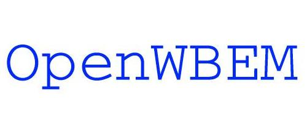

|  |
|
The following is a list of features that would be nice to have.
Enhancement |
Priority |
Effected Module |
Assigned |
| NPI provider interface | Medium | providers | Dan |
| Write some SelectExp classes that event providers can use to easily examine queries, and so pre-parsed queries can be stored by OW_IndicationServerImpl. | Medium | common | Dan |
| Providers/Provider interfaces in a different process. Implement with fork/exec/pipes for communication? | Medium | cimom | Nobody |
| Add better error handling/messages to the MOF compiler. | Low | owmofc | Nobody |
| Binary Indications (Possibly re-factor and use CIMXMLListener) | Low | indication | Nobody |
| CMPI | Medium | providers | Nobody |
If you want to request a missing feature (there are some that are not
listed) or are interested in working on OpenWBEM, please email the OpenWBEM site maintainer.